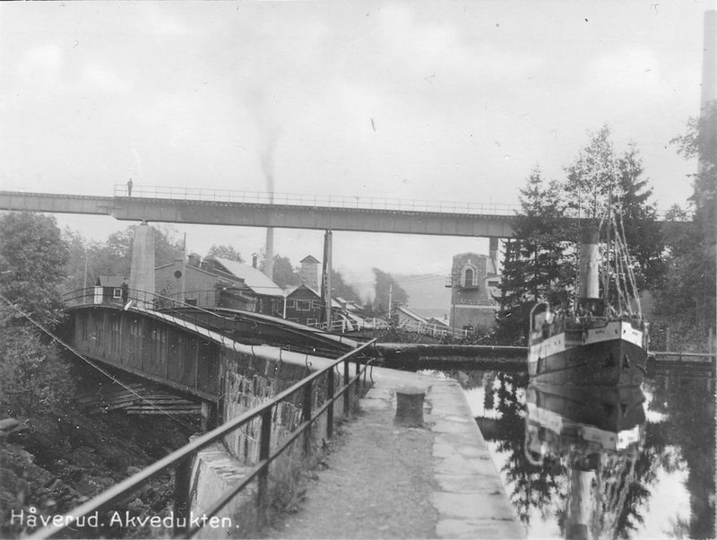

Jag är student inom frontend utveckling och söker LIA plats till hösten 2025. Tidigare har jag studerat
systemvetenskap med spetskompetens i interaktionsdesign.
Under min praktikperiod hoppas jag få en djupare insikt i front end, men jag är också intresserad av att
arbeta i en roll nära UX designers samt att lära mig mer kring gränssnittsdesign. Eftersom jag har ett
privat intresse inom fotografering skulle det även vara roligt att lära en del inom bildredigering. Bilden
här till höger är ett montage jag gjort av viadukten och fartyget. Jag har även skapat skuggan av fartyget.
Vidare på denna sida presenterar jag de projekt jag arbetet med i mina studier på Medieinstitutet.
